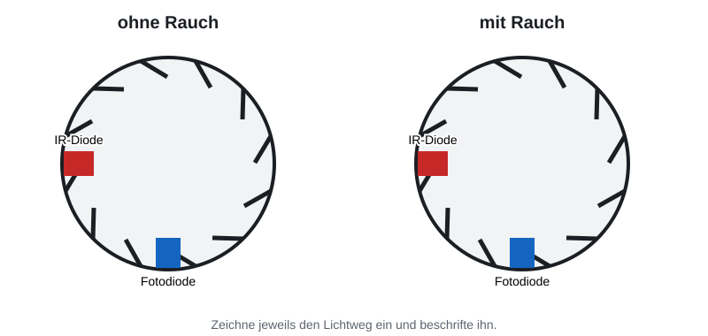

AB 3 – Der richtige Melder am richtigen Ort
Situation: „In der Rahmenwerkstatt wird gesägt, in der Teeküche gibt es Wasserkocher und Toaster. Geht da nicht ständig der Alarm los?“ (Frau Hofmann) Material: IB 3, Stationskarten (042), Laborplatz · Ziele: IA2, IA3, IB1
Stationen (Erarbeiten · GA rotierend · 45 min)
Die Aufträge stehen auf den Stationskarten (042). Wechsel nach 10 min auf Signal. Hake ab, was erledigt ist.
| Station | Inhalt | Pflicht/Wahl | erledigt |
|---|---|---|---|
| 1 | Optischer Rauchmelder: Streulichtprinzip, Labyrinth | Pflicht | ☐ |
| 2 | Wärmemelder: Maximal/Differential, Klassen | Pflicht | ☐ |
| 3 | Flammen- und Mehrkriterienmelder (Fallkarten) | Pflicht | ☐ |
| 4 | Labor: Rauchmelder mit Prüfaerosol, Wärmemelder mit Fön auslösen | Pflicht | ☐ |
| 5 | Ansaugrauchmelder, linienförmige Melder | Erweiterung | ☐ |
Station 1 – Streulichtprinzip: Zeichne den Lichtweg ohne und mit Rauch ein.

Erkläre das Streulichtprinzip in 3 Sätzen. Verwende: IR-Diode, Labyrinth, Rauchpartikel, Fotodiode.
Station 2 – Wärmemelder „TM 58/10“ (Maximal 58 °C, Differential ab 10 K/min):
| Situation | Anstieg in K/min | Maximal? | Differential? | Alarm? |
|---|---|---|---|---|
| a) Teeküche: 21 °C → 24 °C in 5 min (Wasserkocher) | ||||
| b) Papierkorbbrand: 22 °C → 52 °C in 2 min | ||||
| c) Schwelbrand im Lager: 22 °C → 60 °C in 30 min | ||||
| d) Heizlüfter direkt unter dem Melder: 20 °C → 35 °C in 1 min |
Warum hat jeder Differentialmelder zusätzlich eine Maximalschwelle?
Station 3 – Fallkarten:
| Fall | gewählter Melder | Begründung (Brandkenngröße / Täuschungsgröße) |
|---|---|---|
| 1 Lackierkabine | ||
| 2 Großraumbüro mit Kaffeeküche | ||
| 3 Tiefgarage | ||
| 4 Schreinerei | ||
| 5 Hotelzimmer mit Bad | ||
| 6 Metallbau mit Schweißen |
Station 4 – Beobachtung im Labor:
| Reaktion nach … s | Anzeige an der Zentrale | |
|---|---|---|
| Rauchmelder | ||
| Wärmemelder |
Warum reagiert der Wärmemelder auf den Fön, obwohl kein Feuer da ist?
Station 5 (Erweiterung) – Sondermelder:
| Fall | Lösung und Begründung |
|---|---|
| Hochregallager, 15 m hoch | |
| Serverraum, Schwelbrand früh erkennen |
Aufgabe 1 – Melderauswahl Kunsthaus (Entscheiden · PA · 25 min) Pflicht
| Raum | erwartete Brandkenngröße | Täuschungsgröße | gewählter Melder | Begründung |
|---|---|---|---|---|
| 1 Atelier / Galerie | ||||
| 2 Besprechung | ||||
| 3 Büro | ||||
| 4 Flur | ||||
| 5 Teeküche | ||||
| 6 WC | ||||
| 7 Lager / Rahmenwerkstatt |
Kontrolle: Think-Pair-Share. Vergleicht mit einem anderen Paar und einigt euch bei Abweichungen auf eine Begründung.
Aufgabe 2 – Für Profis Erweiterung
Die Inhaberin will später im Atelier eine 6 m hohe Galerieebene mit Glasdach einbauen. Welche Meldertechnik schlägst du vor? Begründe.